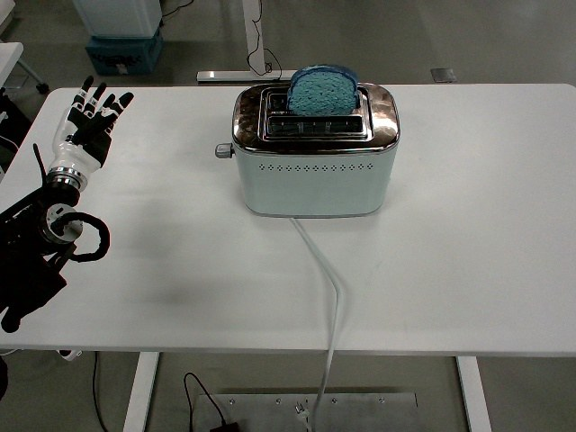

RoboMIND · tienkung_gello_1rgb__press_down_toaster/1211_172928
Press down toaster

Visual review action_review.json
{
"prompt_protocol": "humanoid_action_v1",
"prompt_protocol_note": "Applied by analogy to a non-Humanoid-Everyday/GR1 humanoid (Tien Kung with dexterous hands, single overhead RGB stream); the overhead view does not show the robot body, so the arm is described by where it enters the image.",
"prompt_provenance": "visually_authored_from_video_and_initial_frame",
"dataset": "x-humanoid-robomind/RoboMIND",
"task": "press_down_toaster",
"episode_id": "1211_172928",
"source_video": "../../original/data/trajectory.hdf5",
"generation_camera": "camera_top",
"source_frame_count": 522,
"source_resolution": [
640,
480
],
"source_fps": null,
"source_fps_note": "FPS is not recorded in the source HDF5; 30 FPS is only a nominal playback rate, so no real-time durations are claimed.",
"selected_source_frame_start": 0,
"selected_source_frame_end_exclusive": 522,
"selected_frame_count": 522,
"selection_reason": "The episode is one continuous single task (reach to the toaster lever, press it, release, withdraw); the phases are ordinary parts of one action, so the complete clip is retained and no shortened branch or full_sequence prompt is created.",
"usable_prompt": "The robot's arm enters from the left edge of the image, turns its hand palm-down, and extends one finger toward the lever knob on the left side of the toaster. The fingertip pushes the lever, lowering the blue bread slice into the toaster, then releases it so the slice springs back up, and the arm withdraws to its raised starting pose. Keep the camera fixed; preserve robot geometry, physically valid joint motion, and normal gripper opening and closing.",
"full_sequence_prompt": null,
"selected_action_outcome": {
"status": "visually_completed",
"description": "The extended fingertip contacts the lever knob on the left side of the toaster (about frames 198-204) and holds against it while the blue bread slice sinks into the toaster slots (starting about frame 236, mostly lowered by about 340, lowest with the toaster body slightly shifted/tilted at about 372). Around frames 374-380 the fingertip backs off the knob and the slice is back up above the toaster by frame 380, i.e. the toaster does not visibly stay latched down in the filmed outcome. The arm then retracts to the left and returns to a raised open-hand pose near its starting pose by about frame 500; the toaster and slice are in their original configuration at the end."
},
"source_overall_outcome": {
"status": "visually_completed",
"source_quality_label": null,
"description": "Same as the selected action: the lever is pressed and the slice goes down, then rises again when the finger releases, and the hand returns near its start pose. No separate success/failure label exists in the source."
},
"anatomical_side_evidence": {
"visible_description": "Overhead external camera; the toaster stands mid-table and a single white-and-black dexterous humanoid arm and hand enters from the left edge of the image, with the dark torso/shoulder hardware at the left edge. The other arm is never visible.",
"telemetry_evidence": "Only joint_position columns 0-6 (arm block) vary over the episode (largest changes in columns 1, 3, 4 and 5); columns 8-14 (second arm block) and the hand columns 7 and 15 are constant. If the 16-dim layout is [left arm 7, left hand 1, right arm 7, right hand 1], the moving arm is the robot's left, but this column ordering is an assumption, not verified.",
"geometry_evidence": "At about frame 150 the white dorsal plate faces up (palm down), fingers point toward the toaster (image right) and the thumb sits on the image-bottom side. If the robot faces image-right, that thumb placement would indicate a left hand, consistent with the telemetry block assumption, but the robot body orientation is not visible.",
"visual_certainty": "Robot-relative left/right is only weakly supported (probably the robot's left arm), so the usable prompt describes it as the arm entering from the left edge of the image."
},
"arm_roles": {
"active_visible_arm": "The arm entering from the image left (probably the robot's left arm) reaches toward the toaster, shapes the hand with one leading finger extended and the thumb pointing down/away, presses the toaster's side lever knob with that fingertip, holds, backs off and retracts.",
"other_arm": "Not visible; telemetry for the second arm block is constant, so it does not act."
},
"coordination": "Single arm acts alone; no second hand, hand-to-hand transfer or human interaction.",
"chronology": [
{
"source_frames_inclusive": [
0,
48
],
"observation": "Arm static at image left with the hand raised and fingers open and spread, palm facing up/toward the camera; toaster centered with the blue bread slice sticking up from the slots."
},
{
"source_frames_inclusive": [
50,
110
],
"observation": "Arm begins moving: the hand rotates toward palm-down and the forearm lowers and extends rightward toward the toaster (telemetry joint 4 rises from about 0.04 to 0.66 between frames 60 and 100)."
},
{
"source_frames_inclusive": [
112,
190
],
"observation": "Forearm keeps extending toward the lever knob on the left side of the toaster; the fingers close up into a pointing shape with one leading finger extended (palm-down open hand still visible near frame 150; pointing shape by about frame 170-190); fingertip about a hand-width from the knob at frame 190."
},
{
"source_frames_inclusive": [
192,
214
],
"observation": "Fingertip reaches the lever knob and touches it (contact seen at frame 200 and later; native-resolution crops at 200 and 240)."
},
{
"source_frames_inclusive": [
216,
372
],
"observation": "Fingertip stays against the lever knob. The blue bread slice starts sinking into the toaster from about frame 236, is mostly lowered by about frame 340, and is lowest at about 360-372 where the toaster body appears slightly shifted/tilted by the push. The finger holds this pose with little motion (telemetry nearly constant between frames 200 and 360)."
},
{
"source_frames_inclusive": [
374,
382
],
"observation": "Fingertip backs away from the knob (seen at frame 376 with a small gap) and the slice jumps back up above the toaster by frame 380; the lever knob is visibly at its original position at frames 380 and 392."
},
{
"source_frames_inclusive": [
384,
470
],
"observation": "Arm pulls back and lifts toward the image left; hand re-opens its fingers while moving away (frames 400-470)."
},
{
"source_frames_inclusive": [
472,
521
],
"observation": "Arm returns to a raised open-hand pose at the left edge near the initial pose; toaster and bread slice are back in their original appearance and the scene is otherwise unchanged."
}
],
"uncertainties": [
"Robot-relative left/right of the acting arm is not directly visible from the overhead camera; the weak evidence points to the robot's left arm, so the prompt names the arm by where it enters the image.",
"The overhead view cannot show whether the lever travels down or whether a latch engages; the lever press is inferred from the fingertip contact on the side knob and the slice sinking into the toaster. The slice rising again right after the fingertip releases suggests the lever did not latch, but the latch mechanism is not visible.",
"Which individual finger is the extended pointing finger (index versus another) is not resolvable at this resolution; the prompt says 'one finger'.",
"The exact frame where the lever begins to move is ambiguous (contact about frames 198-204, slice motion visible from about 236).",
"FPS is not recorded in the source; frame indices are authoritative, not time.",
"Telemetry column-to-arm mapping (left-first layout) is assumed and used only as supporting evidence."
],
"source_annotation_discrepancies": [
"The publisher instruction is 'Press down toaster'. The video shows a fingertip pressing the lever knob on the side of the toaster and the slice lowering, but the toaster does not visibly stay latched down: the slice pops back up when the finger releases at about frames 374-380. No left/right, colour or object-order information is given by the annotation, so no other discrepancies."
],
"inspection_coverage": {
"entire_sequence_reviewed": true,
"sampled_decoded_frame_indices": [
0,
2,
4,
6,
8,
10,
12,
14,
16,
18,
20,
22,
24,
26,
28,
30,
32,
34,
36,
38,
40,
42,
44,
46,
48,
50,
52,
54,
56,
58,
60,
62,
64,
66,
68,
70,
72,
74,
76,
78,
80,
82,
84,
86,
88,
90,
92,
94,
96,
98,
100,
102,
104,
106,
108,
110,
112,
114,
116,
118,
120,
122,
124,
126,
128,
130,
132,
134,
136,
138,
140,
142,
144,
146,
148,
150,
152,
154,
156,
158,
160,
162,
164,
166,
168,
170,
172,
174,
176,
178,
180,
182,
184,
186,
188,
190,
192,
194,
196,
198,
200,
202,
204,
206,
208,
210,
212,
214,
216,
218,
220,
222,
224,
226,
228,
230,
232,
234,
236,
238,
240,
242,
244,
246,
248,
250,
252,
254,
256,
258,
260,
262,
264,
266,
268,
270,
272,
274,
276,
278,
280,
282,
284,
286,
288,
290,
292,
294,
296,
298,
300,
302,
304,
306,
308,
310,
312,
314,
316,
318,
320,
322,
324,
326,
328,
330,
332,
334,
336,
338,
340,
342,
344,
346,
348,
350,
352,
354,
356,
358,
360,
362,
364,
366,
368,
370,
372,
374,
376,
378,
380,
382,
384,
386,
388,
390,
392,
394,
396,
398,
400,
402,
404,
406,
408,
410,
412,
414,
416,
418,
420,
422,
424,
426,
428,
430,
432,
434,
436,
438,
440,
442,
444,
446,
448,
450,
452,
454,
456,
458,
460,
462,
464,
466,
468,
470,
472,
474,
476,
478,
480,
482,
484,
486,
488,
490,
492,
494,
496,
498,
500,
502,
504,
506,
508,
510,
512,
514,
516,
518,
520
],
"sampling_method": "Every second decoded frame of camera_top (frames 0-520) in sequential temporary 4x3 contact sheets covering the complete 522-frame source, plus native-resolution and zoomed crops at key transitions.",
"native_resolution_frame_indices": [
0,
120,
150,
190,
200,
240,
260,
280,
340,
372,
376,
380,
392
],
"conditioning_png_inspected_after_sequence": true,
"conditioning_png": "../first_frame.png",
"temporary_evidence_location": "/tmp/rm_review_tienkung_gello_1rgb__press_down_toaster_1211_172928 (not a dataset artifact)",
"ancillary_camera_videos_used": false,
"telemetry_used": "puppet/joint_position (16-dim) sampled every 20 frames to see which block moves and the timing of the reach, as supporting evidence only."
},
"generation_reference_validation": {
"source_frame_start": 0,
"source_frame_end_exclusive": 522,
"frame_count": 522,
"lossless_source_frame_correspondence_passed": true,
"original_source_hdf5_retained_unchanged": true
}
}